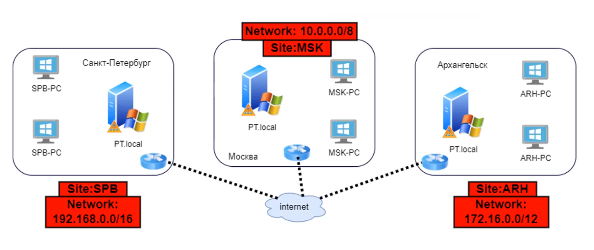

Домен - логическая структура, которая
в себе объединяет представления техники или пользователей в виде объектов, доступные
для управления системным администратором
Active Directory - каталог, который
хранит объекты домена.
Контроллер домена - конкретный
сервер, управляющий доступом к сетевым ресурсам в рамках одного домена. Контроллеры
домена выполняют функции аутентификации пользователей, поиска в каталоге, т.е. управляют
взаимодействием между пользователем и доменом.
Логически доменная структура представляет из себя
дерево (лес доменов), в котором основные домены могут порождать поддомены. Основными
логическими объектами будут являться:
Пользователи
Компьютеры
Группы
Контейнеры
Лес доменов
Деревья доменов
Active Directory Domain Services (ADDS)
Сервисы, необходимые для функционирования
домена
Инструменты, для управления доменом
AD Users & Computers - графическая оснастка,
которая позволяет редактировать, создавать новые и просматривать объекты в базе
данных домена, состоящую из пользователей и устройств
AD Domain & trusts - инструмент для регулирования
отношений между доменами (используется в безопасности)
AD Sites & Services - оснастка для разделения
доменов на локальные сети и настройки времени синхронизации между ними
Инфраструктурные части ADDS
NTDS - база данных объектов домена
Контроллеры домена (в том числе доступны только для
чтения)
Глобальный каталог - для быстрого поиска по БД домена
Объекты AD
Users
Computers
Groups
Organizational units (контейнеры, OU)
Базовые контейнеры AD (папки)
Builtin - содержит различные группы для
администрирования
Computers - OU с компьютерами
Domain controllers - все контроллеры домена
ForeignSecurityPrincipals - контейнер, в котором
хранятся SID пользователей из других доверенных лесов
Managed Service Account - контейнер для хранения
специальных сервисных учетных записей
Users - здесь расположены группы администрирования и
пользователи
RSAT
Remote Server Administration Tools -
средства для удаленного администрирования сервера, которые позволяют управлять ролями и
компонентами Windows Server с обычной рабочей станции
PoSH
Windows PowerShell - расширяемое
средство автоматизации от Microsoft, с его помощью можно менять настройки, останавливать и запускать
сервисы, а так же производить обслуживание приложений. Windows PowerShell ISE - среда
разработки скриптов для PoSH
Групповые политики
Основная цель - возможность централизованно
управлять пользователями и компьютерами в домене
{kind=link}
{kind=link}
{kind=link}